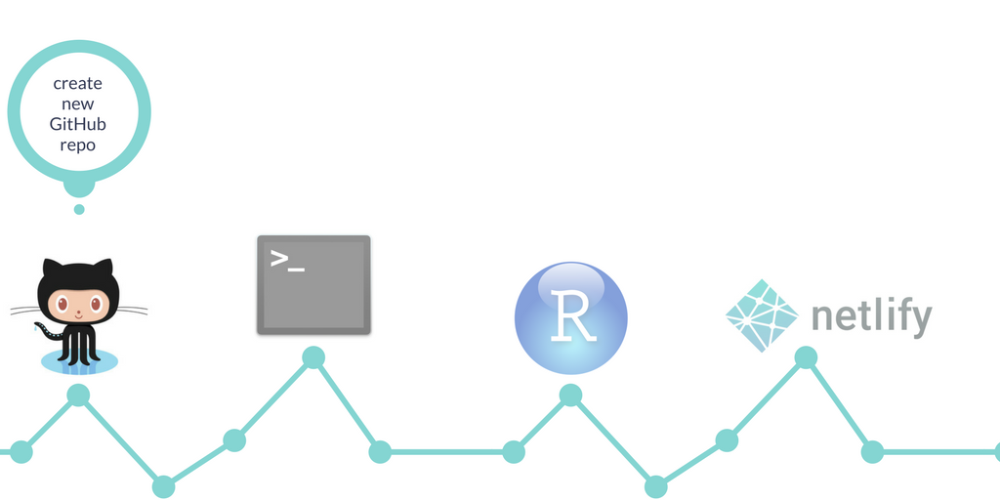
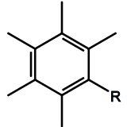

Up & Running with blogdown

1 Read up on blogdown
Before you start, I recommend reading the following:
blogdown: Creating Websites with R Markdown by Yihui Xie and Amber Thomas- Making a Website Using
blogdown, Hugo, and GitHub pages also by Amber Thomas
I also found this comment by Eric Nantz, the creator of the R-Podcast, in the rbind/support issues section on GitHub to be helpful:
2 Caveats, disclaimers, etc.
Even with all the great resources I listed above, getting myself up and running took a few tries, so in this post I’m passing along what ended up working for me. Everyone’s mileage may vary, though, depending on your operating system and your approach. About me: I am a macOS user, and I use R, RStudio, Git (usually via GitLab, sometimes via GitHub), and terminal regularly, so I’m assuming familiarity here with all of these. If that is not you, here are some places to get started:
- For Git: Happy Git with R by Jenny Bryan et al.
- For RStudio: DataCamp’s Working with the RStudio IDE (free) by Garrett Grolemund
- For Terminal: The Command Line Murder Mystery by Noah Veltman, and The UNIX Workbench by Sean Kross
I also have Xcode and Homebrew installed- you will probably need these to download Hugo. If you don’t have either but are on a mac, this link may help:
Finally, I did not want to learn more about a lot of things! For instance, the nitty gritty of static site generators and how domain names work. I am a new mom, and just in the process of writing all this up, I filled up my tea mug twice with ice cold water, and filled my water bottle with scalding hot water. So, where offered, I followed the advice of Yihui and Amber. For example:
3 In GitHub

Go online to your GitHub account, and create a new repository (check to initialize with a
READMEbut don’t add.gitignore- this will be taken care of later). For naming your repo, consider your future deployment plan:- If you are going to use Netlify to host the site, you can name this repository anything you want!
You can see some of the repo names used by members of the
rbindorganization here. - If you want to host your site as a GitHub Page, you should name your repository
yourgithubusername.github.io(so mine would have beenapreshill.github.io). If you are going this route, I suggest you follow Amber’s instructions instead of mine!
- If you are going to use Netlify to host the site, you can name this repository anything you want!

Screenshot above: Creating a new repository in GitHub
Go to the main page of your new repository, and under the repository name, click the green Clone or download button.
In the Clone with HTTPs section, click on the clipboard icon to copy the clone URL for your new repository. You’ll paste this text into terminal in the next section.
4 In terminal

Now you will clone your remote repository and create a local copy on your computer so you can sync between the two locations (using terminal or your alternative command line tool for a Windows machine).
Use
cdto navigate into the directory where you want your repo to beOnce there, type:
git clone [paste]. So my command looked like this:
git clone https://github.com/apreshill/apreshill.gitAnd this is what printed to my terminal window:
Cloning into 'apreshill'...
remote: Counting objects: 3, done.
remote: Compressing objects: 100% (2/2), done.
remote: Total 3 (delta 0), reused 0 (delta 0), pack-reused 0
Unpacking objects: 100% (3/3), done.
Checking connectivity... done.- Close terminal, you are done in there.
5 In RStudio

- Install
blogdownfrom your RStudio console. If you already havedevtoolsinstalled like I did, you can just use the second line below:
if (!requireNamespace("devtools")) install.packages("devtools")
devtools::install_github("rstudio/blogdown")- Install Hugo using the
blogdownpackage helper function:
blogdown::install_hugo()
# or
library(blogdown)
install_hugo()blogdown won’t create a website in your root folder because the README.md file is already there. I didn’t find that to be the case- I tested this with a new site as well. If one way doesn’t work for you, try the other!
- Use the top menu buttons in RStudio to select
File -> New Project -> Existing Directory, then browse to the directory on your computer where your GitHub repo is and click on the Create Project button.
Screenshot above: Creating a new project in an existing directory in RStudio
- Now you should be “in” your project in RStudio. If you are using git for version control, edit your
*gitignorefile. This file should be viewable in your file viewer pane in RStudio. Below is what it should look like: the first four lines will automatically be in this file if you have set up your RStudio Project, but if you plan to use Netlify to deploy, you need to add thepublic/line (read about here.)
.Rproj.user
.Rhistory
.RData
.Ruserdata
blogdown
.DS_Store # if a windows user, Thumbs.db instead
public/ # if using Netlify6 Build your site in RStudio

Now you can finally build your site using the blogdown::new_site() function. But first you should at least think about themes…
6.1 Picking a theme
There are over 90 Hugo themes. So I went back to the blogdown book. Thankfully, Yihui and Amber offer “to save you some time, we list a few themes below that match our taste…”. Huzzah- I went with hugo-academic! Whatever theme you choose, you’ll need to pick one of 3 ways to make your new site:
- If you are happy with the default theme, which is the lithium theme, you can use:
blogdown::new_site() # default theme is lithium- If you want a theme other than the default, you can specify the theme at the same time as you call the
new_sitefunction:
# for example, create a new site with the academic theme
blogdown::new_site(theme = "gcushen/hugo-academic", theme_example = TRUE)- If instead you want to add the theme later (like I did, because I didn’t see the above example until it was too late!), you can do this:
library(blogdown)
new_site() # default theme is lithium
# need to stop serving so can use the console again
install_theme("gcushen/hugo-academic", theme_example = TRUE, update_config = TRUE)blogdown::serve_site() and how LiveReload works (and how it blocks your R console by default)
I recommend setting theme_example = TRUE- some themes won’t provide an example site, but the academic theme did and I found it helpful to see. You can always delete the example content.
6.2 Update project options
In your project in RStudio, go to the top menu bar of RStudio and select Tools -> Project Options and update following Yihui and Amber’s instructions.
6.3 Edit your configurations
Relevant reading:
blogdownbook chapter on configuration- Additional detail from Amber
- You can also view my
config.tomlfile
Now, edit the baseurl in your config.toml file. The URL should always end with a / trailing slash. At this point, you probably haven’t deployed your site yet, so to view it locally you can use the Serve Site add-in, or run the blogdown::serve_site function. Both of these baseurls worked for me when viewing locally:
baseurl = "https://example.com/"
baseurl = "/"baseurl = listed ends with a trailing slash /!
Go ahead and edit all the other elements in the config.toml file now as you please- this is how you personalize your site!
6.4 Addins & workflow
Relevant reading:
Addins: use them- you won’t need the blogdown library loaded in the console if you use the Addins. My workflow in RStudio at this point (again, just viewing locally because we haven’t deployed yet) works best like this:
- Open the RStudio project for the site
- Use the Serve Site add-in (only once due to the magic of LiveReload)
- View site in the RStudio viewer pane, and open in a new browser window while I work
- Select existing files to edit using the file pane in RStudio
- After making changes, click the save button (don’t
knit!)- the console will reload, the viewer pane will update, and if you hit refresh in the browser your local view will also be updated - When happy with changes, add/commit/push changes to GitHub
Having blogdown::serve_site running locally with LiveReload is especially useful as you can immediately see if you have totally screwed up. For example, in editing my about.md file, this error popped up in my console after making a change and I was able to fix the error right away:
Started building sites ...
ERROR 2017/06/08 16:22:34 failed to parse page metadata for home/about.md: (18, 6): missing comma
Error: Error building site: Errors reading pages: Error: failed to parse page metadata for home/about.md: (18, 6): missing comma for about.mdThe above workflow is only for editing existing files or posts, but not for creating new posts. For that, read on…
6.5 Posting
Relevant reading:
blogdownbook chapter on RStudio IDEblogdownbook chapter on output formats: on .md versus .Rmd posts- Additional detail from Amber on adding a blog post
Bottom line:
Use the New Post addin. But, you need the console to do this, so you have to stop blogdown::serve_site by clicking on the red Stop button first. The Addin is a Shiny interface that runs this code in your console: blogdown:::new_post_addin(). So, your console needs to be unblocked for it to run. You also need to be “in” your RStudio project or it won’t work.
6.5.1 Draft posts
Relevant reading:
Whether you do a markdown or R Markdown post (see below), you should know that in the YAML front matter of your new file, you can add draft: TRUE and you will be able to preview your post using blogdown::serve_site(), but conveniently your post will not show up on your deployed site until you set it to false. Because this is a function built into Hugo, all posts (draft or not) will still end up in your GitHub repo though.
6.5.2 New markdown posts
Pick one of 2 methods:
- Use the New Post addin and with the radio button at the bottom select Format: Markdown (recommended)
- Use the console to author a new
.mdpost:
blogdown::new_post()
blogdown::new_post(ext = '.md') # md is the default!Here are the ?new_post arguments:
new_post(title, kind = "", open = interactive(),
author = getOption("blogdown.author"), categories = NULL, tags = NULL,
date = Sys.Date(), file = NULL, slug = NULL,
title_case = getOption("blogdown.title_case"),
subdir = getOption("blogdown.subdir", "post"),
ext = getOption("blogdown.ext", ".md"))6.5.3 New R Markdown (.Rmd) posts
Again, you have your choice of one of 2 methods:
- Use the New Post addin and with the radio button at the bottom select Format: R Markdown (.Rmd) (recommended)
- Use the console to author a new
.Rmdpost:
blogdown::new_post(ext = '.Rmd') # md is the default!After you edit your .Rmd post, in addition to saving the changes in your .Rmd file, you must use blogdown::serve_site- this is how the output html file needs to be generated.
.Rmd posts- use blogdown::serve_site instead. If you happen to hit the knit button, just Serve Site again to rewrite the .html file.
Ultimately, your YAML front matter looks something like this; note that some but not all features of rmarkdown::html_document are supported in blogdown:
---
title: "My Awesome Post"
author: "John Doe"
date: "2017-02-14"
output:
blogdown::html_page:
toc: true
toc_depth: 1
number_sections: true
fig_width: 6
---.html file is properly output.
6.5.4 Adding images to a post
If you want to include an image that is not a figure created from an R chunk, the recommended method is to:
- Add the image to your
/static/img/folder, then - Reference the image using the relative file path as follows:
7 Deploy in Netlify

Deploying in Netlify through GitHub is smooth. Yihui and Amber give some beginner instructions, but Netlify is so easy, I recommend that you skip dragging your public folder in and instead automate the process through GitHub.
- When you are ready to deploy, commit your changes and push to GitHub, then go online to Netlify.
- Click on the Sign Up button and sign up using your existing GitHub account (no need to create another account)
- Log in, and select:
New site from Git -> Continuous Deployment: GitHub. From there, Netlify will allow you to select from your existing GitHub repositories. You’ll pick the repo you’ve been working from with
blogdown, then you’ll configure your build. This involves specifying two important things: the build command and the publish directory (this should bepublic).- More about the build command from Netlify: “For Hugo hosting,
hugowill build and deploy with the version 0.17 ofhugo. You can specify a specifichugorelease like this:hugo_0.15. Currently0.13,0.14,0.15,0.16,0.17,0.18and0.19are supported. For version0.20and above, you’ll need to create a Build environment variable calledHUGO_VERSIONand set it to the version of your choice.” I opted for the former, and specifiedhugo_0.19.
- More about the build command from Netlify: “For Hugo hosting,
You can check your hugo version in terminal using the command hugo version. This is what my output looked like, so I could run version 0.20 if I wanted to through Netlify, but I went with 0.19 and it works just fine.
$ hugo version
Hugo Static Site Generator v0.20.7 darwin/amd64 BuildDate: 2017-05-08T18:37:40-07:00Screenshot above: Basic build settings in Netlify
Netlify will deploy your site and assign you a random subdomain name of the form random-word-12345.netlify.com. Mine was particularly unfortunate, with the random word garbage-collector-janice. You should know that you can change this; I changed mine to apreshill.netlify.com.
baseurl in your config.toml file (so I changed mine to baseurl = “https://apreshill.netlify.com/”).
At this point, you should be up and running with blogdown, GitHub, and Netlify, but here are some ideas if you want to go further…
8 Going further
8.1 Custom CSS
I like to tinker with default theme settings like colors and fonts. Every Hugo theme is structured a little differently, but if you are interested, you can check out my custom css to see how I customized the academic theme, which provides a way to link to a custom CSS file in the config.toml file:
# Link custom CSS and JS assets
# (relative to /static/css and /static/js respectively)
custom_css = ["blue.css"]8.2 Formspree
I used Formspree to make a contact form, which is an online service (managed on GitHub) that allows you to add an HTML form to your static site. No registration, just use the form and confirm your email address once. I added the following code into my contact widget:
<form action="https://formspree.io/your@email.com" method="POST">
<label for="name">Your name: </label>
<input type="text" name="name" required="required" placeholder="here"><br>
<label for="email">Your email: </label>
<input type="email" name="_replyto" required="required" placeholder="here"><br>
<label for="message">Your message:</label><br>
<textarea rows="4" name="message" id="message" required="required" class="form-control" placeholder="I can't wait to read this!"></textarea>
<input type="hidden" name="_next" value="/html/thanks.html" />
<input type="submit" value="Send" name="submit" class="btn btn-primary btn-outline">
<input type="hidden" name="_subject" value="Website message" />
<input type="text" name="_gotcha" style="display:none" />
</form>8.3 *.rbind.io domain names
You may want a different domain name than the one provided by Netlify. I opted for a free subdomain *.rbind.io offered by RStudio. To do the same, head over to the rbind/support GitHub page and open a new issue. All you need to do is let them know what your Netlify subdomain name is (*.netlify.com), and what you want your subdomain name to be (*.rbind.io). The awesome rbind support team will help you take it from there!
baseurl in your config.toml file to reflect your new rbind subdomain name (so mine is baseurl = “https://alison.rbind.io/”).
